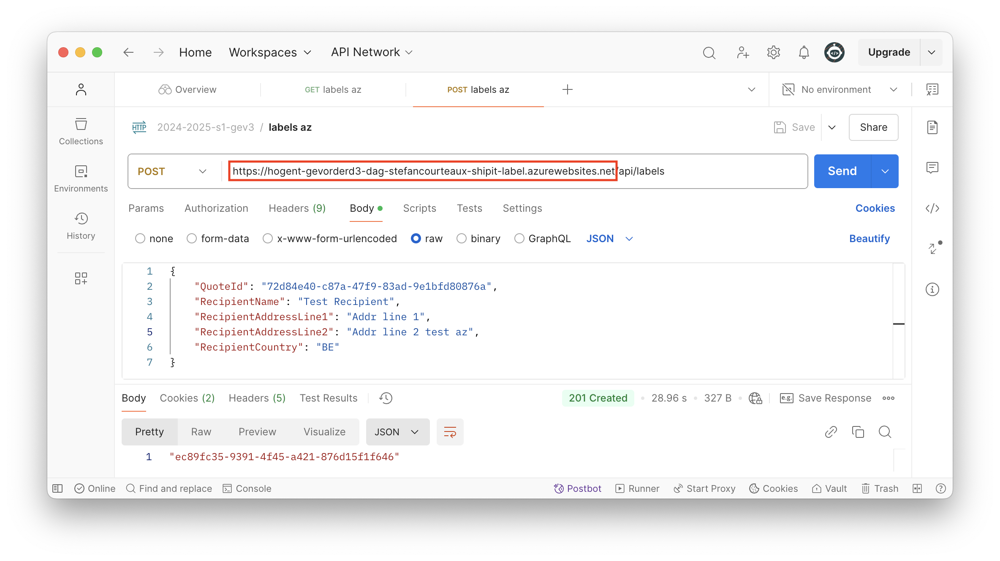

Blob Storage & Web Service Architectuur
Doel van deze les
-
Azure Blob Storage leren kennen.
-
Nadenken over web service architectuur.
-
Minimal Api beter leren kennen.
Story - Label Maken
Technische Input
De situatie die we willen bekomen bij afronding van deze story ziet eruit als volgt.
Storage Account
Navigeer naar de Azure Portal om de Storage Account Services (Opslagaccounts)weer te geven.
Voeg een nieuwe storage account toe.
We hebben minder vrijheid in de naamgeving dan bij de vorige resources. Kies iets logisch. Maak je resource in Europa en kies voor goedkope backups.
Je kan dan rechtstreeks naar Review en Create gaan.
Eenmaal je resource beschikbaar is op Azure, navigeer je erin naar de sectie Containers. Maak een nieuwe Container.
De connection string die onze eigen applicatie nodig heeft, kunnen we ophalen onder de Access Keys sectie.
Storage Explorer
| De storage explorer functionaliteit in de Azure Portal wordt steeds beter. Voor basisoperaties, zoals de files oplijsten, wissen en downloaden, heb je de desktop applicatie niet nodig. |
Start de Azure Storage Explorer op en log in met je Hogent account.
De applicatie is nu verbonden met je Azure resources. Open de Explorer.
De container die we aangemaakt hebben in de Azure Portal kan nu doorbladerd worden. Op dit moment zit er natuurlijk nog geen data in.
Implementatie
Solution
We voegen een aantal nieuwe projecten toe aan de solution om de label functionaliteiten in onder te brengen. Zoals vermeld in de story, maken we deze keer een (compacte) domeinlaag. We willen de logica immers later hergebruiken in een niet-webapi project.
ShipIt.Label.Persistence
Hier gaan we verbinding maken de nieuwe Azure Blob Storage Account om de pdf-bestanden weg te schrijven en in te lezen. We hebben nuget Azure.Storage.Blobs nodig.
We voorzien een interface. We gaan de blobs (Binary Large OBjects) overdragen als een array van bytes.
public interface ILabelRepository
{
Task WriteAsync(byte[] content, string trackingNumber);
Task<byte[]> ReadAsync(string trackingNumber);
}De basics om een handle op een blob file te krijgen, zijn dezelfde bij lezen of schrijven.
private BlobClient GetBlobClient(string fileName)
{
var client = new BlobServiceClient(_options.ConnectionString); (1)
var containerClient = client.GetBlobContainerClient(_options.Container); (2)
return containerClient.GetBlobClient(fileName); (3)
}| 1 | Verbinding maken met storage account. De connectionstring komt via Options Pattern. |
| 2 | Verbinding maken met de container die we voorzien hebben voor de labels. |
| 3 | De specifieke blob file benaderen waarin we willen lezen of schrijven. |
Om files uit te lezen, gebruik je de Download methodes op de BlobClient. Om files te (over)schrijven, gebruik je de Upload methodes.
public async Task<byte[]> ReadAsync(string trackingNumber)
{
var blob = GetBlobClient($"{trackingNumber}.pdf"); (1)
var download = await blob.DownloadContentAsync();
return download.Value.Content.ToArray();
}
public async Task WriteAsync(byte[] content, string trackingNumber)
{
var blob = GetBlobClient($"{trackingNumber}.pdf"); (1)
await blob.UploadAsync(new BinaryData(content));
}| 1 | Onze eigen methode die een blob handle teruggeeft. |
ShipIt.Label.Domain(.DTO)
We voorzien domeinklassen. We hebben uiteraard een Label nodig. Het lijkt ook nuttig om een Adress klasse te voorzien. Deze klassen behoren toe aan het domein en mogen niet door de api of ui gebruikt worden. We voegen dus ook een DomainController en een DTO toe om het geheel mooi te scheiden.
Interactie met bovenliggende lagen
public class LabelCreation
{
public string RecipientName { get; set; }
public string RecipientAddressLine1 { get; set; }
public string RecipientAddressLine2 { get; set; }
public string RecipientCountry { get; set; }
public double ShipmentPrice { get; set; }
}public interface IDomainController
{
Task<string> CreateLabelAsync(LabelCreation labelCreation);
Task<byte[]> GetLabelAsync(string trackingNumber);
}Intern Domein
De interne klassen van het domein zijn rijker.
internal class Address
{
public string Name { get; set; }
public string AddressLine1 { get; set; }
public string AddressLine2 { get; set; }
public string Country { get; set; }
public Address(){
}
public Address(LabelCreation labelCreation)
{
Name = labelCreation.RecipientName;
AddressLine1 = labelCreation.RecipientAddressLine1;
AddressLine2 = labelCreation.RecipientAddressLine2;
Country = labelCreation.RecipientCountry;
}
}We weten dat het label een pdf representatie nodig heeft. QuestPDF voorziet een IDocument interface. Door deze te implementeren kunnen we gemakkelijk ons model als pdf weergeven. Door dit te doen, hebben we impliciet gekozen voor een "rijk" model, dwz er zit logica/gedrag in.
using QuestPDF.Fluent;
using QuestPDF.Helpers;
using QuestPDF.Infrastructure;
namespace ShipIt.Label.Domain;
internal class Label : IDocument
{
public Address Address { get; set; }
public string TrackingNumber { get; set; }
public double Price { get; set; }
public Label(Address address, double price)
{
Address = address;
Price = price;
TrackingNumber = Guid.NewGuid().ToString();
}
public void Compose(IDocumentContainer container)
{
container.Page(page =>
{
page.Size(PageSizes.A4);
page.Margin(4.0f, Unit.Centimetre);
page.Header()
.Text($"ShipIt Label {TrackingNumber}")
.FontSize(28)
.Bold()
.FontColor(Colors.Red.Darken2);
page.Content()
.PaddingVertical(8)
.Column(column =>
{
column.Item().Text(Address.Name);
column.Item().Text(Address.AddressLine1);
column.Item().Text(Address.AddressLine2);
column.Item().Text(Address.Country);
column.Item().Text(Price.ToString());
});
page.Footer()
.AlignCenter()
.Text("De kleine lettertjes");
});
}
}De QuestPDF nuget zal er ook voor zorgen dat de methode GeneratePdf() beschikbaar wordt op instanties van onze klasse die IDocument implementeert.
public class DomainController(ILabelRepository repo) : IDomainController (1)
{
private readonly ILabelRepository _repo = repo;
public async Task<string> CreateLabelAsync(LabelCreation labelCreation) (2)
{
var label = new Label(
new Address(labelCreation), labelCreation.ShipmentPrice); (3)
await _repo.WriteAsync(
label.GeneratePdf(), label.TrackingNumber);
return label.TrackingNumber;
}
public Task<byte[]> GetLabelAsync(string trackingNumber){
return _repo.ReadAsync(trackingNumber);
}
}| 1 | Het repository zal via dependency injection binnenkomen. |
| 2 | DTO komt binnen. |
| 3 | Op dit moment is het Label volwaardig, maar de pdf bestaat nog niet. Deze wordt pas aangemaakt wanneer de Compose() methode aangeroepen wordt door GeneratePDF(). Deze methode geeft de pdf terug als een eenvoudige byte[]. |
ShipIt.Label.Api
We willen de label functionaliteit als api blootstellen. Gezien alle logica in het domein vervat zit, gaan we geen service laag maken in het api project. We maken een minimal api en schrijven alle api code in Program.cs.
| Dit kan een geldige keuze in bepaalde scenario’s en is niet per definitie "beter" of "slechter" dan een api met api controllers. Hier doen we dit vooral om het eens gedaan te hebben ✅ |
We voorzien een basic contract om het Request voor te stellen.
public record LabelRequestContract
{
public string QuoteId { get; set; } (1)
public string RecipientName { get; set; }
public string RecipientAddressLine1 { get; set; }
public string RecipientAddressLine2 { get; set; }
public string RecipientCountry { get; set; }
}| 1 | We krijgen een referentie naar een Quote mee. We gaan aan de hand daarvan zelf de prijs opzoeken. We geven de gebruiker de kans niet om de prijs zelf mee te geven in deze request klasse - ze zouden immers durven liegen! |
D api zal een call moeten doen naar de Quote api om de prijs op te halen. Om http calls te doen vanuit onze eigen code, gebruiken we HttpClient. Er zijn vele manieren om clients te instantiëren en te gebruiken, dit is maar een van die manieren.
var builder = WebApplication.CreateBuilder(args);
builder.Services.Configure<LabelRepositoryOptions>(
builder.Configuration.GetSection(
nameof(LabelRepositoryOptions)));
builder.Services.AddHttpClient(); (1)
builder.Services.AddProblemDetails();
builder.Services.AddScoped<ILabelRepository, LabelRepository>(); (2)
builder.Services.AddScoped<IDomainController, DomainController>(); (3)
QuestPDF.Settings.License = QuestPDF.Infrastructure.LicenseType.Community; (4)
var app = builder.Build();
app.MapPost("api/labels", async Task<CreatedAtRoute<string>> (
IHttpClientFactory clientFactory,
[FromBody] LabelRequestContract contract,
IDomainController domain) => {
// get price
// create label
// return trackingNumber / resource identifier
});
app.MapGet("api/labels/{trackingnumber}",
async Task<Results<Ok<string>, BadRequest, FileContentHttpResult>>(
[FromRoute] string trackingNumber,
[FromHeader(Name = "Accept")] string acceptValue,
IDomainController domain) =>
{
// TODO
}).WithName("GetLabel"); (5)
app.Run();| 1 | We registreren httpclient bij de DI container. |
| 2 | We registreren het repository bij de DI container. |
| 3 | We registreren de domeincontroller bij de DI container. |
| 4 | We registreren het QuestPDF licentie type. |
| 5 | We benoemen de Get expliciet zodat we er elders kunnen naar verwijzen. |
Laat ons de Post() van dichterbij bekijken
app.MapPost("api/labels", async Task<CreatedAtRoute<string>> (
IHttpClientFactory clientFactory, (1)
[FromBody] LabelRequestContract contract, (2)
IDomainController domain) => {
// get price
var httpClient = clientFactory.CreateClient();
var baseUrl = builder.Configuration.GetValue<string>("QuoteApiBaseUrl");
var url = $"{baseUrl}/api/pricequotes/{contract.QuoteId}";
var options = new JsonSerializerOptions();
options.Converters.Add(new JsonStringEnumConverter());
options.PropertyNameCaseInsensitive = true;
var response = await httpClient
.GetFromJsonAsync<PriceQuoteResponseContract>(url, options); (3)
// create label
var creation = new LabelCreation{
RecipientAddressLine1 = contract.RecipientAddressLine1,
RecipientAddressLine2 = contract.RecipientAddressLine2,
RecipientCountry = contract.RecipientCountry,
RecipientName = contract.RecipientName,
ShipmentPrice = response.Price (4)
};
var trackingNumber = await domain.CreateLabelAsync(creation); (4)
// return trackingNumber / resource identifier
return TypedResults.CreatedAtRoute( (5)
trackingNumber, "GetLabel", new { trackingnumber = trackingNumber});
});| 1 | We verkrijgen een HttpClientFactory. |
| 2 | Het labelrequest komt uit de Request Body. |
| 3 | We gebruiken de client om een http call te doen naar de Quote api. De response wordt in dezelfde beweging gemapped op een object van het type QuoteResponseDTO. Deze url moet uiteraard komen uit configuratie via het Options Pattern. |
| 4 | Nu we de prijs kennen, vragen we het domein een label te maken. We krijgen het trackingnumber terug. |
| 5 | We geven een resultaat terug dat de locatie van de aangemaakte resource bevat alsook een response object met het trackingnumber. |
Laat ons de Get() van dichterbij bekijken. De story vertelt ons dat de partij die onze api oproept via een Accept header kan meegeven welke representatie deze van het label wil: json of pdf.
Het kan handig zijn een resource in meerdere representaties beschikbaar te hebben. Denk bijvoorbeeld aan een svg bestand - je zou dit kunnen opvragen als xml of als png resource. Hier doen we dit vooral om het eens gedaan te hebben ✅
|
app.MapGet("api/labels/{trackingnumber}",
async Task<Results<Ok<string>, BadRequest, FileContentHttpResult>>( (1)
[FromRoute] string trackingNumber, (2)
[FromHeader(Name = "Accept")] string acceptValue, (3)
IDomainController domain) =>
{
if(acceptValue == "text/json") (4)
{
// Dummy implementatie
return TypedResults.Ok(trackingNumber);
}
else if (acceptValue == "application/octet-stream") (5)
{
var pdfStream = await domain.GetLabelAsync(trackingNumber);
return TypedResults.Bytes(
pdfStream,
"application/octet-stream",
$"{trackingNumber}.pdf");
}
return TypedResults.BadRequest(); (6)
}).WithName("GetLabel");| 1 | De verschillende return types worden opgelijst. |
| 2 | Deze input wordt uit de route gelezen. |
| 3 | Deze input wordt uit een header gelezen. |
| 4 | De client vraagt json. |
| 5 | De client vraagt pdf, we voeren dat uit. We geven een filename mee. Dit staat los van de filename op blob storage. |
| 6 | De inhoud van de Accept header is niet ondersteund door dit endpoint. |
Solution Runnen
Let op: De nieuwe label api zal de bestaande quote api uit dezelfde solution aanroepen. Dit wil zeggen dat je twee startup items nodig hebt.
-
In VS Code hoef je geen speciale runsettings aan te maken. Je kan gewoon een tweede (en derde etc.) project opstarten.
-
In Visual Studio maak je de instellingen zo.
Deployen
We hebben nu twee services om te deployen.
az webapp up ` --name pg3-shipit-stefanc-quote-api ` --plan pg3-shipit-stefanc-plan ` --resource-group pg3-shipit-stefanc ` --location westeurope ` --os-type Linux
az webapp up ` --name pg3-shipit-stefanc-label-api ` --plan pg3-shipit-stefanc-plan ` --resource-group pg3-shipit-stefanc ` --location westeurope ` --os-type linux
Linux targets vereisen eventueel extra dependencies voor QuestPDF. Indien de Azure deployment erover klaagt in de logs, voegen we deze toe.HarfBuzzSharp.NativeAssets.LinuxSkiaSharp.NativeAssets.Linux.NoDependencies.
|

| Je kan de pdf in dit geval niet downloaden met een gewone web browser omdat de gepaste Accept header niet gezet wordt. Dit resulteert in een BadRequest. |
Oefening
-
Probeer zelf de taken van deze week te implementeren. Je kan steeds kijken naar de code uit de les als je vast loopt.
-
Probeer zelf een herimplementatie van de quote api te maken waar alles gebeurt in één laag in één minimal api file.
-
Beschouw de http endpoints als "handlers" die verantwoordelijk zijn voor alles wat binnen de scope van een api call moet gebeuren. Geen lagen, geen abstracties, enkel strikt noodzakelijke mapping. Straight to the point.
-
Je zal eindigen met drastisch minder lijnen code (en een piepkleine solution) voor het quote gedeelte. Het is een totaal andere aanpak. Beter? Slechter? Hangt ervan af 😊
-